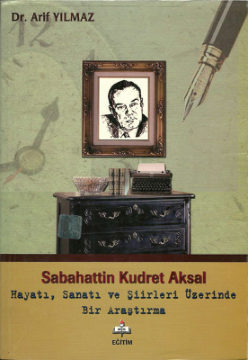

Author file
Sabahattin Kudret Aksal
1920–1993

Work on Sabahattin Kudret Aksal began with a PhD dissertation completed in 2004. It led to a monograph on the poet’s life and art and to a series of critical editions that brought his stories, poems and prose back to readers. The articles, a chapter in a volume published in Aksal’s honor and an entry written for the Atatürk Encyclopedia grew out of the same long engagement. In 2019 this editorial work received the Jury’s Special Award of the Sabahattin Kudret Aksal Literary Prize.
Works
Dissertation and monograph
- 2010Sabahattin Kudret Aksal: Hayatı, Sanatı ve Şiirleri Üzerinde Bir Araştırma. Millî Eğitim Bakanlığı Yayınları. Preview pages (PDF)[Sabahattin Kudret Aksal: A Study of His Life, Art and Poetry]
- 2004Sabahattin Kudret Aksal’ın Hayatı, Sanatı ve Şiirleri Üzerinde Bir Araştırma. PhD dissertation, Ankara University, Institute of Social Sciences, supervised by Prof. Dr. Ramazan Kaplan. Council of Higher Education (YÖK) thesis no. 141418. Full text (PDF, 20.7 MB)[A Study of the Life, Art and Poetry of Sabahattin Kudret Aksal]
Critical editions (Yapı Kredi Yayınları)
- 2018Sabahattin Kudret Aksal, Denemeler, Konuşmalar. Expanded critical edition (2nd edition). Preview pages (PDF)[Essays, Talks]
- 2018Sabahattin Kudret Aksal, Yazılar, Yanıtlar. Preview pages (PDF)[Writings, Replies]
- 2008Sabahattin Kudret Aksal, Bütün Şiirleri (Şiirler 1938–1993). Critical edition. Preview pages (PDF)[Collected Poems (Poems 1938–1993)]
- 2005Sabahattin Kudret Aksal, Gazoz Ağacı ve Diğer Öyküler. Critical edition. Preview pages (PDF)[The Soda Tree and Other Stories]
Articles, book chapter and encyclopedia entry
- 2023“Sabahattin Kudret Aksal (1920–1993).” Entry in Atatürk Ansiklopedisi. Atatürk Araştırma Merkezi.[Entry in the Atatürk Encyclopedia]
- 2020“Sabahattin Kudret Aksal ve Şiirleri Üzerine.” In Sabahattin Kudret Aksal’a Armağan, ed. Adil İzci, pp. 76–89. Ve Yayınevi.[On Sabahattin Kudret Aksal and His Poetry]
- 2006“Sabahattin Kudret Aksal’ın Şiirlerinde ‘Kaçış’ Teması.” Türk Dili 91 (653): 421–432. Abstract and full text[The Theme of ‘Escape’ in Sabahattin Kudret Aksal’s Poetry]
- 2005“Sabahattin Kudret Aksal’ın Hikâyeleri.” Türk Dili 90 (645): 254–263. Abstract and full text[The Short Stories of Sabahattin Kudret Aksal]
In his own voice
In this recording Sabahattin Kudret Aksal reads his poem “Uyuyamıyor geceyi”.
The recording lasts 1 minute 50 seconds. Download the MP3 file
The 2019 Sabahattin Kudret Aksal Literary Prize
The Sabahattin Kudret Aksal Literary Prize was established in 2018 in accordance with the will of Münire Aksal. In 2019 the jury, chaired by Eray Canberk, gave the poetry prize to Gökçenur Ç. for Giderken Öpmeseydin Keşke. The jury’s special award went to Arif Yılmaz, who had prepared for publication, by scholarly methods, Aksal’s works together with the writings he had left in journals and newspapers, his interviews and his replies to literary questionnaires. The prizes were presented on 25 April 2019, Aksal’s birthday, at a ceremony held at Yapı Kredi Yayınları.


Photographs by Kadir İncesu.